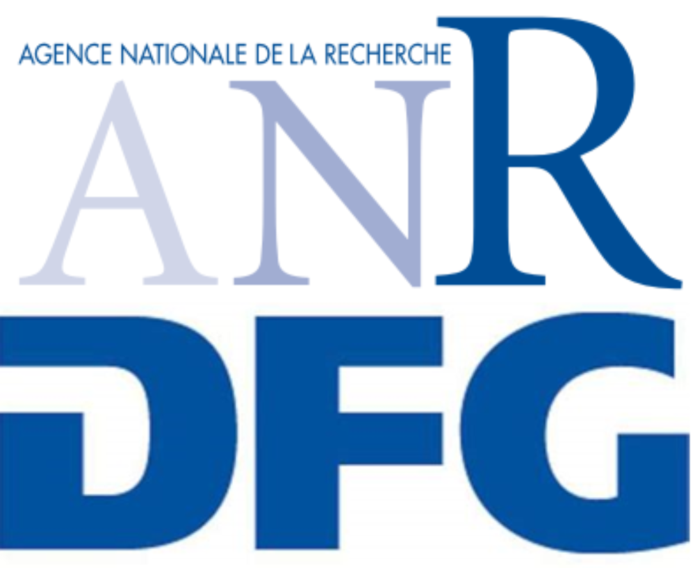

|
Hello! I am currently working as doctoral student in the Institute of Applied Analysis and Numerical Simulation (IANS), University of Stuttgart. Before that, I graduated with the Master degree in Mathematics at Technical University of Munich in 2022. I received the Bachelor degree in Mathematics from University of Stuttgart in 2019. |
{kind=link}
Currently, I'm working on dimenstionally reduced model for Stokes-Brinkman-Darcy models. |
|
|
|
Since May 2022, Institute of Applied Analysis and Numerical Simulation (IANS), University of Stuttgart Ph.D. in Mathematics |

|
Apr. 2020 - Mar. 2022, Department of Mathematics, Technical University of Munich M. Sc. in Mathematics |

|
Sept. 2016 - Oct. 2019, Department of Mathematics, University of Stuttgart B. Sc. in Mathematics |
|
|
|  |
Since May 2022, Project FLUPOR: "Generalised interface conditions for multi-dimensional inertial flows in fluid-porous systems", funded by the French National Research Agency (ANR-PRCI, identification number ANR-21-CE40-0018) and the German Research Foundation (DFG, project number 490872182) |
Updated Jun. 2022